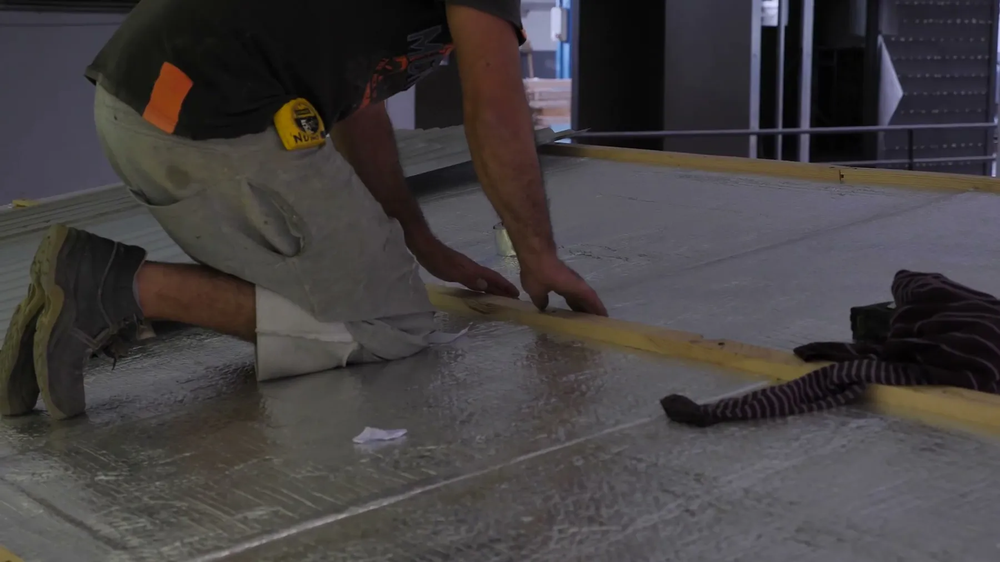

inonda.site
Διαχείριση του ακινήτου μου
Φροντίδα μισθώσεων, υποστήριξη ιδιοκτητών, επιθεωρήσεις και συνεχής διαχείριση ακινήτων σε όλη την Κύπρο.
Δείτε τη διαχείριση ακινήτωνΕπίπεδα, σφιχτά και φτιαγμένα να κρατήσουν: δάπεδα και τοίχοι σε σωστά προετοιμασμένες, αλφαδιασμένες επιφάνειες.

Ανακαίνιση
Από ένα δωμάτιο μέχρι ολόκληρο σπίτι, αφαιρούμε τα παλιά δάπεδα, αλφαδιάζουμε τη βάση και τοποθετούμε το υλικό που επιλέγετε, με προσεγμένα σοβατεπί και μεταβάσεις.
Πώς δουλεύουμε
Τηλέφωνο, WhatsApp ή η φόρμα. Φωτογραφίες και μια σύντομη περιγραφή μάς βοηθούν να προετοιμαστούμε.
Ελέγχουμε, μετράμε και βρίσκουμε την αιτία, όχι μόνο το σύμπτωμα.
Σταθερό εύρος εργασιών, υλικά και τιμή γραπτώς. Καμία εργασία χωρίς τη δική σας έγκριση.
Αδειούχοι τεχνικοί, συμφωνημένο χρονοδιάγραμμα, προστασία δαπέδων και επίπλων, καθημερινός καθαρισμός.
Ελέγχουμε μαζί το αποτέλεσμα και σας παραδίδουμε πιστοποιητικά και γραπτή εγγύηση.
FAQ
Μερικές φορές, αν το παλιό δάπεδο είναι γερό και επίπεδο και το επιτρέπουν τα ύψη των πορτών. Ελέγχουμε και σας λέμε ειλικρινά.
Συνήθως γύρω στο 10%, περισσότερο για διαγώνια ή ψαροκόκαλο. Υπολογίζουμε εμείς τις ακριβείς ποσότητες.
Μπορούμε, ή διαλέγετε σε έκθεση και συντονίζουμε εμείς παράδοση και ποσότητες.
Νέες κουζίνες με σχεδιασμό και τοποθέτηση: ντουλάπια, πάγκοι, συσκευές, πλακάκια, υδραυλικά και φωτισμός.
Λεπτομέρειες ΑνακαίνισηΟλοκληρωμένα μπάνια: στεγάνωση, σωληνώσεις, ντουζιέρες δαπέδου, πλακάκια, έπιπλα και φωτισμός.
Λεπτομέρειες ΑνακαίνισηΠλήρεις ανακαινίσεις διαμερισμάτων και σπιτιών: διαρρυθμίσεις, δίκτυα, φινιρίσματα, με διαχείριση από μία ομάδα.
ΛεπτομέρειεςΔωρεάν προσφορά
Περιγράψτε την εργασία, στείλτε φωτογραφίες στο WhatsApp και θα σας απαντήσουμε με τα επόμενα βήματα, συνήθως την ίδια εργάσιμη μέρα.
INONDA LTD · ΤΡΕΙΣ ΣΥΝΔΕΔΕΜΕΝΟΙ ΙΣΤΟΤΟΠΟΙ
Και οι τρεις ιστότοποι ανήκουν στην INONDA LTD. Βρείτε την υπηρεσία που χρειάζεστε, διαμορφώστε έναν ενδεικτικό προϋπολογισμό και καλέστε μας για επιθεώρηση και γραπτή προσφορά.
Φροντίδα μισθώσεων, υποστήριξη ιδιοκτητών, επιθεωρήσεις και συνεχής διαχείριση ακινήτων σε όλη την Κύπρο.
Δείτε τη διαχείριση ακινήτωνΓνωρίστε τις υπηρεσίες συντήρησης, επισκευών και ανακαίνισης, το αντικείμενό τους και τον τρόπο εργασίας μας.
Δείτε υπηρεσίες & αντικείμενο εργασιώνΕπιλέξτε υπηρεσίες, προσαρμόστε ποσότητες και συγκρίνετε επεξεργάσιμες ενδεικτικές εκτιμήσεις με ΦΠΑ 19%.
Δημιουργήστε την εκτίμησή σαςΟ εκτιμητής είναι εργαλείο προγραμματισμού, όχι οριστική προσφορά. Εξειδικευμένες εργασίες, εξοπλισμός και δομικές παρεμβάσεις χρειάζονται ξεχωριστή αξιολόγηση. Οι αποθηκευμένες εκτιμήσεις παραμένουν στο πρόγραμμα περιήγησής σας στο inonda.homes.